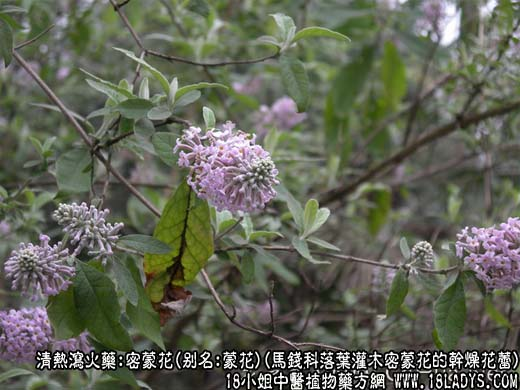
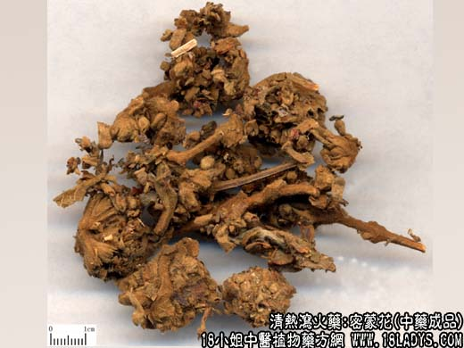
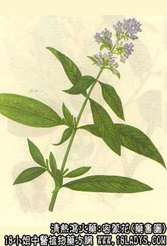

密蒙花为常用中药，始载《开宝本草》。
别名：蒙花。
来源：为马钱科植物落叶灌木密蒙花的干燥花蕾。野生。
产地：主产于湖北、四川、陕西、甘肃、湖南、河南、云南、贵州等省。
性状鉴别：为多数小花蕾密集而成的圆锥花序，呈不规则的团块状，全体灰绿色或黄棕色，密披短毛茸，单一散落的花蕾呈短棒状，长约3~6毫米，直径约1.5毫米。花萼钟状，先端四裂。花冠顶端稍膨大，亦为四裂。质较柔软而易碎。气微香，味微辛而稍苦。
以灰绿色，花蕾密聚有毛茸，无梗者为佳。
主要成分：成蒙花甙。
功效与作用：除风热，明目（可能以消炎作用为主）。
炮制：生用。
性味：甘，微寒。
归经：入肝经。
功能：清肺明目，退翳。
主治：目赤肿痛，翳障。
临床应用：用于眼科，对于急、慢性结膜炎，凡目中有赤脉（结膜充血）、眵泪（多泪和有粘液样分泌物）、目昏（视物不清）、羞明（怕光）者，不论属实症或虚症，均可应用。
属实者配菊花、木贼等；属虚者配杞子、菟丝子。但总的来说，密蒙花以治疗慢性结膜炎，表现有肝肾阴虚而有热者更适宜，方入密蒙花散。
用量：3~6g。
处方举例：密蒙花散（《局方》）：密蒙花、杞子、白蒺藜、石决明、羌活、蔓荆子、菊花、木贼、青葙子等研末，每服9g，饭后以清茶或开水送下，脾胃虚者可加白术末1.5g。
注：在湖南、湖北、江西、河南、四川等省还有另外一种蒙花。习称蒙花珠。为瑞香科灌木结香树的干燥花蕾。密蒙花为多数花蕾集结成头状花序。全体密披淡黄色有光泽的毛茸。单一散落花蕾呈短棒状，稍弯曲，长约6~9毫米，直径约3毫米（形如辛夷花而细小）。质稍脆，易碎断。气微，味淡。密蒙花除产地部分地区习用外，东北、两广及安徽、江苏等省也有运销，主销外贸出口，京津地区不用。